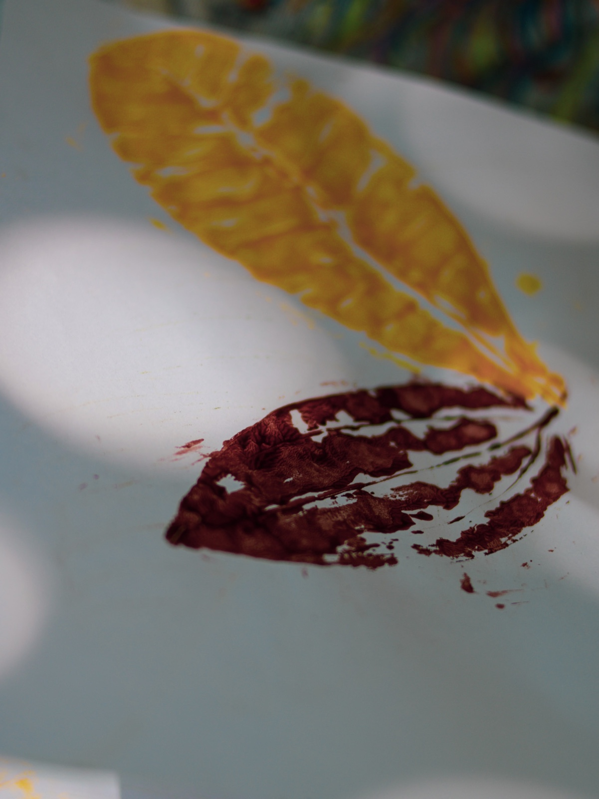

CEntro de Investigação de Currículos Vivos
O CEIVA é o CEntro de Investigação de Currículos Vivos da Amazônia: educações, ciências e saberes ancestrais, não é um projeto e sim um berçário de projetos sobre currículos vivos da Amazônia, nele, gentes, como pesquisadores, professores universitários do país e/ou exterior (de diversas áreas de conhecimento), povos tradicionais e comunidades, são convidados a partilhar sua realidade amazônica e propagar seus saberes de proteção do bioma, por meio de suas práticas biodiversas e em respeito à diversidade das comunidades. É urgente, diante do contexto da emergência climática, reinventar nossa relação com os não humanos e mais que humanos que co-existem conosco no tempo presente e aprender a tê-los como companhias vitais em nossas trajetórias, além de estimular práticas de saberes ancestrais e valores do bem viver da/na Amazônia.
Nome e sentido
Origem do nome
Ceiva no sentido de liberdade, de soltura, e de expansão para o mundo desses saberes ancestrais e práticas educativas dos povos da Amazônia. E, ao mesmo tempo, uma associação sonora à seiva: àquilo que nutre, que transporta, que conecta. Mapear os currículos vivos, por meio das pesquisas, será a seiva do CEIVA.
Essa criação foi pensada por líderes do grupo de pesquisa Vidar em In-tensões (Mônica de Oliveira Costa, Caroline Barroncas de Oliveira) e do Amplia (Daniela Franco Carvalho).